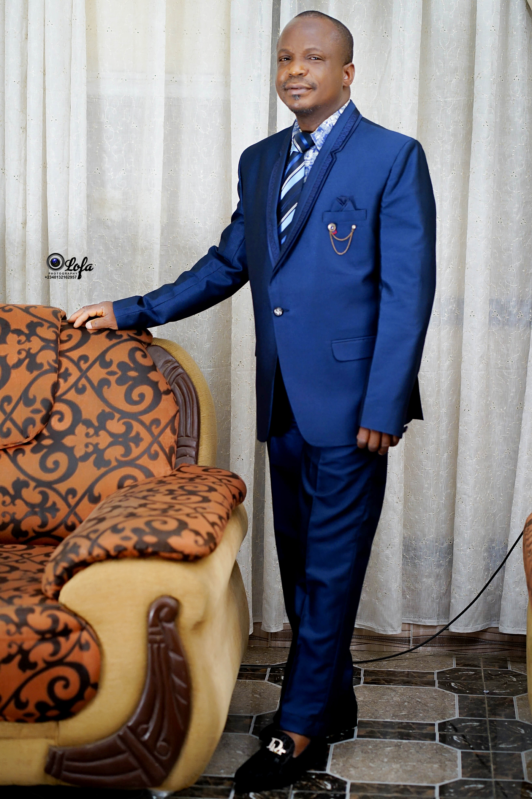
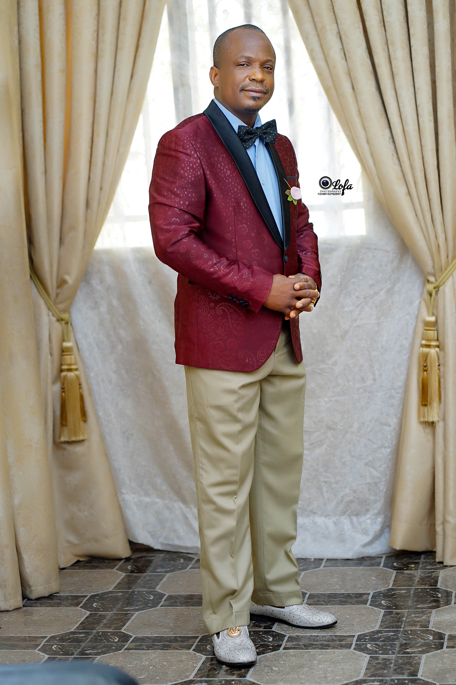
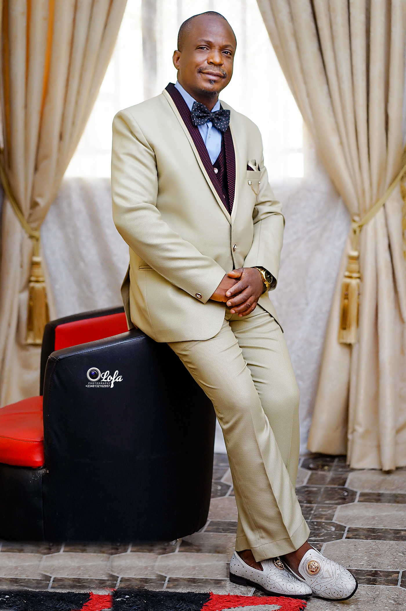

Gallery



Animal Nutrition Expert | Professor at FUNAAB | Pastor at GOFAMINT
Transforming lives through science, faith, and service.
Prof Oso, Abimbola Oladele had his undergraduate (B. Agric) and postgraduate (M, Agric and Ph.D) studies from the Department of Animal Nutrition, Federal University of Agriculture, Abeokuta, Nigeria from the field of Monogastric Animal Nutrition. Driven with a goal to resolve nutritional felt problems that compromise sustainable production of animals as safe food for enhanced health and well-being of growing human population, his research interests over the years has been hinged upon the following five (5) thematic areas: Nutritional evaluation of alternative feeds and feedstuffs for improved poultry and swine production, gut modification strategies geared towards improved growth, well being and reduced odour in poultry production, the use of phytogenic plants as replacement for in-feed antibiotic growth promoters, employing various nutritional strategies to ameliorate the effect of feed contaminants in monogastric animal nutrition and effect of dietary manipulations on nutrition-related gene expression. He is a member of several Professional bodies and has held several administrative positions having served as Head of Department of Animal Nutrition and two terms deputy Dean (Sub-Dean) of the College of Animal Science and Livestock Production.He's currently the Dean of the College of Animal Science and Livestock Production He has been involved in teaching, research and mentoring of students from both undergraduate and graduate students for the past 17 years. He has a significant record of scientific publications based on the various findings generated from his research and collaborated positively with both locally and international scientists in an interdisciplinary, diverse, and multicultural environment.
I am a devoted pastor at GOFAMINT where I minister the Word of God...
Email: drosoann@yahoo.com
Phone: +234 8037252829
Office: Department of Animal Nutrition, FUNAAB